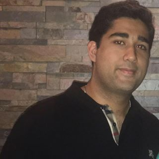

My name is Vijay Wadhwani, I am 19 and currently a sophmore at the Univerisity Of Georgia. I was born on the Island of St. Thomas in 1997. My parents and I lived there until 1999 and then moved to Waycross, Georgia(my current hometown) because of my father's business. All of my family is in the retail clothing buisness. We all have our own sportswear stores selling product from brands such as Converse, Nike, New Balance, New Era hats, and much more. I bascially grew up in my parents store. Everyday after school my mom would pick me up and we would go to the store. I had my own room to do my homework as well as just play in.
Growing up in the buisness environment is how I found my passion to do something in the same field.
My other interests include video games, sports, and also cars.
Overall, I think I have been pretty sucessful in my life. I have always been an Honor student as well as invovled in many organizations
and also have been a mentor to many elementary kids.
I graduated in the top 10 percent of my high school and secured adimission to UGA.
I will apply to terry next semester and hopefully get accepted to the finance or risk management program.
I know that God has a plan for me. I dont think I know!
Everyday I live to achieve these 4 characteristics listed
My Traits
Overall, I am happy with what I achieved in my life so far through keeping faith, and living through what I mentioned above. I am looking foward to the years to come. Below Is an Idea of what my schedule is daily.
| My Class Schedule | |
|---|---|
| CSCI 1100 | MW 2:30-3:20 |
| CSCI 1100 Lab | MW9:05-9:55 |
| Econ 2106 | TR 3:30-4:45 |
| Accounting 1 | TR 11:00-12:15 |
| Ecology | TR 12:30-1:45 |
Thank you for visiting my page if you wish to stay in touch with me please, Connect with me on Linkedin With the link Below!